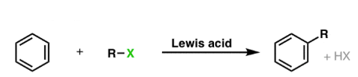
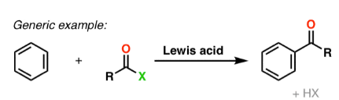
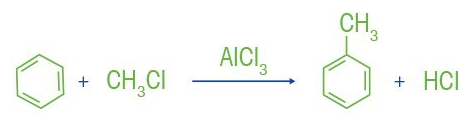
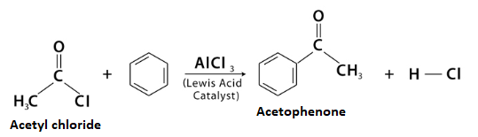
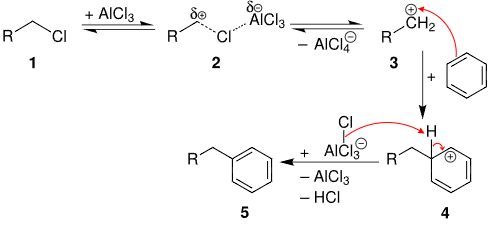
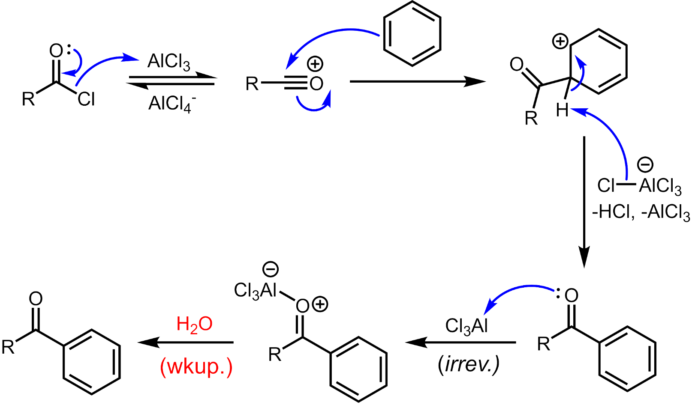

The Friedel-Crafts reactions are a set of reactions developed by Charles Friedel and James Crafts in 1877 to attach substituents to an aromatic ring. Friedel-Crafts reactions are of two main types: Alkylation reactions and Acylation reactions. Both proceed by electrophilic aromatic substitution.
Friedel Crafts Alkylation and Acylation:
Friedel-Crafts Alkylation:

Friedel-Crafts Acylation:

Friedel-Crafts Alkylation:

Friedel-Crafts Acylation:

Alkylation:
1. Formation of electrophile: Alkyl halide reacts with AlCl₃ to generate a carbocation.
2. Electrophilic attack: The aromatic ring attacks the carbocation forming a sigma complex.
3. Deprotonation: Loss of H⁺ restores aromaticity and forms the alkylated product.

Acylation:
The reaction proceeds through generation of an acylium center. The reaction is completed by deprotonation of the arenium ion by AlCl₄⁻,
regenerating the AlCl₃ catalyst. However, in contrast to the truly catalytic alkylation reaction, the formed ketone is a moderate Lewis base,
which forms a complex with the strong Lewis acid aluminum trichloride. The formation of this complex is typically irreversible under reaction conditions.
Thus, a stochiometric quantity of AlCl₃ is needed. The complex is destroyed upon aqueous workup to give the desired ketone.

In a Friedel-Crafts alkylation, rearrangement frequently occurs because the reaction proceeds via a carbocation intermediate. If a more stable carbocation can be formed through a hydride or methyl shift, the rearranged product will be the major outcome.
A classic example is the reaction of benzene with 1-chloropropane in the presence of anhydrous AlCl₃.
Instead of getting the expected propylbenzene, the primary product is isopropylbenzene (cumene).
C₆H₆ + CH₃CH₂CH₂Cl → C₆H₅CH(CH₃)₂
(AlCl₃)
| Reactant | Expected Product | Actual Product | Reason |
|---|---|---|---|
| 1-chloro-2,2-dimethylpropane | Neopentylbenzene | t-Pentylbenzene | 1,2-methyl shift to form a 3° carbocation |
Friedel-Crafts alkylation requires:
Acidic medium